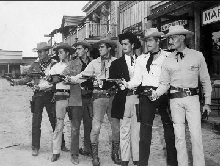

--John Tarrant
"The whole aim of practical politics is to keep the populace alarmed by menacing it with an endless series of hobgoblins, all of them imaginary."
--H. L. Mencken
It used to be so much easier to love my friends and family before their political opinions were stabbing fingers in my face 24/7.
People I’ve known for years, hugged, danced with, toasted over Thanksgiving, people I know to be good folks, kind people of integrity…
Now divided into “sides,” into closed camps- with scorn and righteous certainty as requirements for entry, along with some version of the password, “I agree with you!”
You’d think it would take a lot to foment divisiveness among loved ones, considering both teams say the same exact things about the other, both call the other identical names, both blame the other for starting and perpetuating trouble.
But no. No one seems to have any problem screaming at the mirror.
And oh my gosh, the rage. Percolating even through should-be-harmless situations, like what color a hat is.
Identical, regardless-of-point-of-view rage.
It’s a wonder people can breathe.
And yet not only can folks breathe while spitting fire, they seek out the fire, turning every conversation and post into an opportunity to position their worldview and stoke further fury.
It almost seems like a responsibility to convert the other team to our side.
In fact, we may even think rage is necessary to effect change, that no action will be taken if we’re not out of our head with frenzy.
Anger seems necessary.
And we like it. We like the outrage. We look for it, feed on it, join groups to get more of it.
Furious intensity is the mind’s idea of a good time. It doesn’t want us calm.
Because indignation lets us know our position, our stance, our side.
Which, interestingly, are all words indicating geography. As in, “Here I am. Here’s me taking a stand on this battle ground.”
Guess it's called "identity politics" for a reason.
We identify as “me” through opinion.
As well as by association with a side. Because selves without agreeing-other selves are “vulnerable.”
Although it's unclear, vulnerable to what, as in, what is protected and made stronger by screaming and side-taking and agreement?
We defend our position. With keyboard, flags, yelling and pepper spray,
we make our presence known.
That old reliable, years-nurtured sense of self- created, guarded, defended and maintained via viewpoint.
Now that- that sense of who we are- that’s something worth fighting for. That’s something to defend with everything we’ve got.
Funny though (you laughing yet?), because fury doesn’t actually protect anything. Screaming and opinion can’t protect anything real.
Which means it’s not really the sense of self that is in danger of exposure by disagreement.
In fact we’re all for that being seen. We want that seen.
That’s why we’re so loud about it.
No, what is successfully hidden by rage and point of view, is the lack of self. The quiet, the empty, not-thereness.
That wispy not-there no-self.
That's what is “vulnerable.”
Get quiet for a moment, stop defending and screaming our opinions for half a second,
and we’re truly afraid we’ll disappear.
Turns out we’d much rather yell and fight than see that we’re not what we think we are.
Which might sound like extreme spiritual blah-blah, till we notice we’ll go to any length including death, not to see this.
Agreement-seeking rage is an obscuring distraction, a basic way the self presents, a core strategy of mind.
Points of view and aligning with tribes pretend to establish our existence.
We cannot allow them to let up.
Which is why fury at disagreement has been around for thousands of years, and is not going to stop being around anytime soon.
So trying to calm down, trying to have a reasonable conversation (with no yelling or name calling), trying to let others have their views without being triggered, is verrrry difficult. Usually it comes with tremendous effort and gritted teeth.
Eventually we use words like, "I can't take it anymore," and resort to the block button to cut out people we used to love and enjoy.
We have to defend the sense of self from those barbarians. It's only right.
Now to be clear, I’m not saying this shouldn't happen this way. I'm not saying we should be “spiritual” and focus on positivity or enlightenment or any of that other bypassing nonsense. I’m also not saying anyone should try to exist without a point of view, maybe even a strong point of view. (good thing, since being viewpoint-less is not possible.)
And I’m certainly not dismissing the sense of importance of opinion in these times.
It’s just that, if we can see the purpose served by our points of view, we might be able to do without quite so much self protection.
Only because the ferocious defense of illusion makes us crazy. Hate-filled. Mean.
Delusion makes us less effective, less right, and less able to step outside the usual boxes in order to think straight and find solutions.
Clarity enables us to stand a chance.
And right now, goodness knows we can all use a stance and a chance.
Because in the end, hugging friends and loved ones
rather than cutting them off with hatred,
is what all of us pretend-selves
really want anyway.
.
